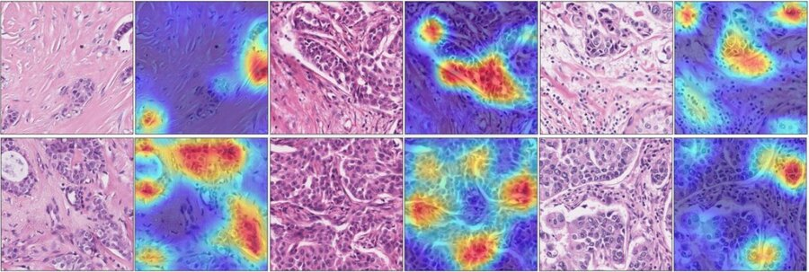

01 †

Scientific Reports · 2025 · First authorRecurrence risk in early-stage breast cancer from H&E whole-slide images
Multi-center retrospective study (n=125; National Cancer Center + Korea University Guro) showing histopathology-only deep learning can approximate genomic-assay-style risk stratification.
Sensitivity0.86 / 0.75 / 0.53Specificity0.82 / 0.80 / 0.97